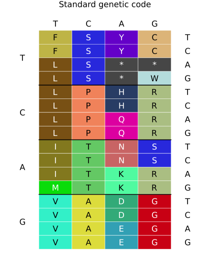
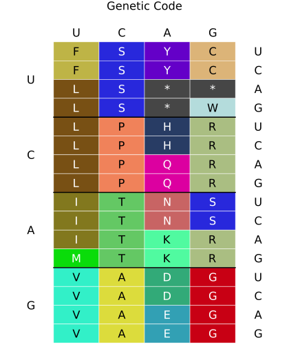

Tutorial
This tutorial shows how to use BioCodes.jl. Since this package is primarily a core package for other packages, most of its functions are of little practical use. Many features for the analysis of biological codes are already available in the BioSequences.jl package. This tutorial also describes them.
Working with tuples or codons
Pre-defined tuples
First, we need to load the required packages:
using BioCodes, BioSequencesWe can access pre-defined sets of k-mers like codons, dinucleotides, and tetranucleotides:
BioCodes.codons64-element Vector{BioSequences.LongSequence{BioSequences.DNAAlphabet{4}}}:
AAA
CAA
GAA
TAA
ACA
CCA
GCA
TCA
AGA
CGA
⋮
TCT
AGT
CGT
GGT
TGT
ATT
CTT
GTT
TTTBioCodes.dinucs16-element Vector{BioSequences.LongSequence{BioSequences.DNAAlphabet{4}}}:
AA
CA
GA
TA
AC
CC
GC
TC
AG
CG
GG
TG
AT
CT
GT
TTBioCodes.tetranucs256-element Vector{BioSequences.LongSequence{BioSequences.DNAAlphabet{4}}}:
AAAA
CAAA
GAAA
TAAA
ACAA
CCAA
GCAA
TCAA
AGAA
CGAA
⋮
TCTT
AGTT
CGTT
GGTT
TGTT
ATTT
CTTT
GTTT
TTTTIt also possible, to create other sets, e.g. all di-nucleoties over the alphabet {A, T}:
alltuples((DNA_A, DNA_T), 2)4-element Vector{BioSequences.LongSequence{BioSequences.DNAAlphabet{4}}}:
AA
TA
AT
TTTuples from sequences
A sequence can be split into non-overlapping tuples of a given length using the Base.split function. Here, we generate a random DNA sequence of length 10 and split it into codons (tuples of length 3):
seq = randseq(DNAAlphabet{4}(), 10)
println(seq)
codons = split(seq; l=3)
println(codons)CACAACCTTG
BioSequences.LongSequence{BioSequences.DNAAlphabet{4}}[CAC, AAC, CTT]Note that the last codon is incomplete, because the sequence length is not a multiple of 3.
Shifting sequences
circshift shifts a sequence to the left by one position:
circshift(dna"AGCT")4nt DNA Sequence:
GCTALet's shift some RNA in the other direction by explicitly setting the shift direction and step width:
circshift(rna"AGCU"; k=-1)4nt RNA Sequence:
UAGCWe can also use BioCodes.circshift together with Base.split to generate all cyclic permutations of k-mers in a sequence:
seq = rna"CAGCUUGAG"
join(circshift.(split(seq, l=3)))"AGCUUCAGG"Complementary and reversed sequences
Complemented tuples can be generated with BioSequences.complement which is applied element-wise to a sequence of codons:
seq = rna"CAGCUUGAG"
complement.(split(seq, l=3))3-element Vector{BioSequences.LongSequence{BioSequences.RNAAlphabet{4}}}:
GUC
GAA
CUCReversed tuples are also available via BioSequences.reverse:
seq = rna"CAGCUUGAG"
reverse.(split(seq, l=3))3-element Vector{BioSequences.LongSequence{BioSequences.RNAAlphabet{4}}}:
GAC
UUC
GAGIf applied together, we get complementary reversed codons:
seq = rna"CAGCUUGAG"
complement.(reverse.(split(seq, l=3)))3-element Vector{BioSequences.LongSequence{BioSequences.RNAAlphabet{4}}}:
CUG
AAG
CUCOr, if the sequence of codons is supposed to be reserved, too:
seq = rna"CAGCUUGAG"
reverse(complement.(reverse.(split(seq, l=3))))3-element Vector{BioSequences.LongSequence{BioSequences.RNAAlphabet{4}}}:
CUC
AAG
CUGGenetic code tables
BioCodes supports the work with genetic codes which can be known codes with 64 codons or artificial codes with an arbitrary number of bases (the alphabet) and tuple sizes.
Standard genetic code and its derivations
We begin with the standard genetic code:
sgc = StandardGeneticCode()GeneticCode over alphabet {T,C,A,G} with tuple length 3
TTT: F TCT: S TAT: Y TGT: C
TTC: F TCC: S TAC: Y TGC: C
TTA: L TCA: S TAA: * TGA: *
TTG: L TCG: S TAG: * TGG: W
CTT: L CCT: P CAT: H CGT: R
CTC: L CCC: P CAC: H CGC: R
CTA: L CCA: P CAA: Q CGA: R
CTG: L CCG: P CAG: Q CGG: R
ATT: I ACT: T AAT: N AGT: S
ATC: I ACC: T AAC: N AGC: S
ATA: I ACA: T AAA: K AGA: R
ATG: M ACG: T AAG: K AGG: R
GTT: V GCT: A GAT: D GGT: G
GTC: V GCC: A GAC: D GGC: G
GTA: V GCA: A GAA: E GGA: G
GTG: V GCG: A GAG: E GGG: G
We can also specify the genetic code as listed at NCBI https://www.ncbi.nlm.nih.gov/Taxonomy/Utils/wprintgc.cgi. BioSequences.ncbi_trans_table provides part of it as a list:
using BioSequences
ncbi_trans_tableTranslation Tables:
1. The Standard Code (standard_genetic_code)
2. The Vertebrate Mitochondrial Code (vertebrate_mitochondrial_genetic_code)
3. The Yeast Mitochondrial Code (yeast_mitochondrial_genetic_code)
4. The Mold, Protozoan, and Coelenterate Mitochondrial Code and the Mycoplasma/Spiroplasma Code (mold_mitochondrial_genetic_code)
5. The Invertebrate Mitochondrial Code (invertebrate_mitochondrial_genetic_code)
6. The Ciliate, Dasycladacean and Hexamita Nuclear Code (ciliate_nuclear_genetic_code)
9. The Echinoderm and Flatworm Mitochondrial Code (echinoderm_mitochondrial_genetic_code)
10. The Euplotid Nuclear Code (euplotid_nuclear_genetic_code)
11. The Bacterial, Archaeal and Plant Plastid Code (bacterial_plastid_genetic_code)
12. The Alternative Yeast Nuclear Code (alternative_yeast_nuclear_genetic_code)
13. The Ascidian Mitochondrial Code (ascidian_mitochondrial_genetic_code)
14. The Alternative Flatworm Mitochondrial Code (alternative_flatworm_mitochondrial_genetic_code)
15. Blepharisma Macronuclear Code (blepharisma_macronuclear_genetic_code)
16. Chlorophycean Mitochondrial Code (chlorophycean_mitochondrial_genetic_code)
21. Trematode Mitochondrial Code (trematode_mitochondrial_genetic_code)
22. Scenedesmus obliquus Mitochondrial Code (scenedesmus_obliquus_mitochondrial_genetic_code)
23. Thraustochytrium Mitochondrial Code (thraustochytrium_mitochondrial_genetic_code)
24. Pterobranchia Mitochondrial Code (pterobrachia_mitochondrial_genetic_code)
25. Candidate Division SR1 and Gracilibacteria Code (candidate_division_sr1_genetic_code)We show the vertebrate mitochondrial code:
GeneticCode(BioSequences.ncbi_trans_table[2])GeneticCode over alphabet {T,C,A,G} with tuple length 3
TTT: F TCT: S TAT: Y TGT: C
TTC: F TCC: S TAC: Y TGC: C
TTA: L TCA: S TAA: * TGA: W
TTG: L TCG: S TAG: * TGG: W
CTT: L CCT: P CAT: H CGT: R
CTC: L CCC: P CAC: H CGC: R
CTA: L CCA: P CAA: Q CGA: R
CTG: L CCG: P CAG: Q CGG: R
ATT: I ACT: T AAT: N AGT: S
ATC: I ACC: T AAC: N AGC: S
ATA: M ACA: T AAA: K AGA: *
ATG: M ACG: T AAG: K AGG: *
GTT: V GCT: A GAT: D GGT: G
GTC: V GCC: A GAC: D GGC: G
GTA: V GCA: A GAA: E GGA: G
GTG: V GCG: A GAG: E GGG: G
A genetic codes works like an associated array, so it is possible to access the mapping directly:
println(sgc[dna"AAA"])
println(sgc[dna"ATG"]) # start codon
println(sgc[dna"GCG"])K
M
AIndex-based access is also possible. However, this is dependent of the underlying order of the tuples (codons) and labels (amino acids) - so be aware.
println(sgc[1]) # TTT
println(sgc[64]) # GGGF
GBioCodes provides also inverse mappings for genetic code tables. BioCodes.inverse creates a dictionary which maps an amino acid (or label in general) to a set of associated codons (or tuples in general). This might be useful if a frequent lookup for the mapping is required. As an example a translation is created for the vertebrate mitochondrial code (index 2) which has four stop codons.
gc = GeneticCode(ncbi_trans_table[2])
a2c = inverse(gc)
println(a2c[AA_V])
println(a2c[AA_Term]) # 4 stop codonsSet(BioSequences.LongSequence{BioSequences.DNAAlphabet{4}}[GTC, GTT, GTA, GTG])
Set(BioSequences.LongSequence{BioSequences.DNAAlphabet{4}}[AGG, TAA, TAG, AGA])Artificial genetic code tables
The standard genetic code as discussed in the previous section is a special case of general genetic codes. The alphabet and tuple length and even the mapping can be changed.
We start with a code that only uses Adenin and Thymine as the alphabet and that has a tuple length of 2:
gc = GeneticCode(2, [DNA_A, DNA_T])GeneticCode over alphabet {A,T} with tuple length 2
AA: * AT: *
TA: * TT: *
Next we show how this empty code can be modified. We assign new amino acids:
gc[dna"AA"] = AA_F
gc[dna"TT"] = AA_L
gcGeneticCode over alphabet {A,T} with tuple length 2
AA: F AT: *
TA: * TT: L
Plots.jl extension
If the package Plots.jl is available and used the function BioCodes.plot creates an image that shows the genetic code.
using BioCodes, Plots
plot(StandardGeneticCode(); title="Standard genetic code")
plot(StandardGeneticCode(; alphabet=RNAAlphabet))
An artificial code.
gc = GeneticCode(2, [DNA_T, DNA_C])
gc[dna"TT"] = AA_A
plot(gc)![]()
API
Base.Matrix — Method
Matrix(gc::GeneticCode; order) -> Matrix
Converts a genetic code into a matrix where the cells are of type GeneticCodeCell.
This is intended for printing purposes. Only tuple lengths 2 and 3 are supported yet.
BioCodes.GeneticCode — Type
mutable struct GeneticCode{T, U<:BioSymbols.NucleicAcid, V<:BioSequences.NucleicAcidAlphabet}A mutable struct representing a genetic code as a mapping from tuples to labels.
BioCodes.GeneticCode — Method
GeneticCode(
code::BioSequences.GeneticCode;
alphabet
) -> Union{GeneticCode{_A, BioSymbols.DNA} where _A, GeneticCode{_A, BioSymbols.RNA} where _A}
Genetic code based on 64 codons according the the NCBI list. See BioSequences.ncbi_trans_table for a list of all known genetic codes. The order of the bases is TCAG (or UCAG) (and not alphabetically).
BioCodes.GeneticCode — Method
GeneticCode(
tuple_length::Int64,
alphabet::Vector,
label_order::Vector
) -> GeneticCode
A genetic code that uses tuples of length tuple_length with the alphabet alphabet. label_order represents the list of labels for each tuple.
The order of label_order must be identical to the order of the tuples in alltuples(alphabet, tuple_length).
gc = GeneticCode(2, [DNA_A, DNA_T], [AA_A, AA_L, AA_K, AA_P])BioCodes.GeneticCode — Method
GeneticCode(
tuple_length::Int64,
alphabet::Vector;
init
) -> GeneticCode{BioSymbols.AminoAcid}
An empty genetic code filled with identical labels as specified with the parameter init (default is Stop-Signal *).
gc1 = GeneticCode(2, [DNA_A, DNA_T]) # only stop signal
gc2 = GeneticCode(2, [DNA_A, DNA_T]; init=AA_L) # only LeucineBioCodes.GeneticCodeCell — Type
struct GeneticCodeCellA helper structure that stores a single mapping of a genetic code for printing. I.e. the assignment of a codon to an amino acid. The data types, however, are not restricted to biological entities.
Base.circshift — Method
circshift(seq::BioSequences.BioSequence; k) -> Any
Shift the elements in a sequence for one position to the left (AUGC -> UGCA).
Base.length — Method
length(gc::GeneticCode) -> Int64
The number of tuples in the code.
using BioCodes
length(StandardGeneticCode())
# output
64Base.split — Method
split(seq::BioSequences.BioSequence; l) -> Vector
Create tuples of length l by splitting a sequence seq. seq must implement the collect method.
BioCodes.StandardGeneticCode — Method
StandardGeneticCode(
;
alphabet
) -> Union{GeneticCode{_A, BioSymbols.DNA} where _A, GeneticCode{_A, BioSymbols.RNA} where _A}
The Standard Genetic Code. See GeneticCode for details.
BioCodes.alltuples — Method
alltuples(gc::GeneticCode) -> Any
All tuples of the code. The order is specified by []alphabet]@ref.
using BioCodes, BioSequences
gc = GeneticCode(2, [DNA_A, DNA_T])
alltuples(gc)
# output
4-element Vector{LongSequence{DNAAlphabet{4}}}:
AA
TA
AT
TTBioCodes.alltuples — Method
alltuples(
alphabet::Array{T<:BioSymbols.BioSymbol, 1},
l::Int64
) -> Vector
Create all possible tuples of length l from the given alphabet. The tuples are returned as a vector of LongDNA or LongRNA sequences, depending on the type of the alphabet (DNA or RNA).
BioCodes.inverse — Method
inverse(
gc::GeneticCode
) -> Dict{_A, Set{_A1}} where {_A, _A1}
Dictionary which maps a label to a set of corresponding tuples for a given genetic code gc.
Examples
The Vertebrate Mitochondrial Code (index 2) is used. This code has four stop codons.
using BioCodes, BioSequences
gc = GeneticCode(ncbi_trans_table[2])
a2c = inverse(gc)
sort([a2c[AA_Term]...]) # Stop signal (set is sorted)
# output
4-element Vector{LongSequence{DNAAlphabet{4}}}:
AGA
AGG
TAA
TAGBioCodes.plot — Function
Plots.plot(gc::GeneticCode; title=nothing, kwargs...) -> Plots.PlotPlot a GeneticCode as a colored table in the standard textbook layout:
- Top axis – second base of the codon/tuple.
- Left axis – first base, one label per group of N rows (N = alphabet size).
- Right axis – third base, one label per row (only for tuple length 3).
- Cells – amino acid (or generic label) with a distinctive background color.
The layout reproduces the appearance of classical genetic code tables in the literature (e.g. T/U rows × C/A/G columns × T/U/C/A/G inner rows). Only tuple lengths 2 and 3 are supported.
Arguments
gc– aBioCodes.GeneticCodeobject.title– optional plot title; a descriptive default is generated if omitted.- Any remaining keyword arguments are forwarded to
Plots.plot.
Example
using BioCodes, BioCodesPlots, Plots
plot(StandardGeneticCode())
plot(StandardGeneticCode(; alphabet=RNAAlphabet))
plot(GeneticCode(2, [DNA_T, DNA_C, DNA_A, DNA_G]))BioCodes.tuple_length — Method
tuple_length(gc::GeneticCode) -> Any
The length of the tuples in the code.
using BioCodes
tuple_length(StandardGeneticCode()) # i.e. codons
# output
3BioSymbols.alphabet — Method
alphabet(
gc::GeneticCode
) -> Vector{U} where U<:BioSymbols.NucleicAcid
The alphabet used in the code.
using BioCodes, BioSymbols
alphabet(StandardGeneticCode())
# output
4-element Vector{DNA}:
DNA_T
DNA_C
DNA_A
DNA_GBioCodes.dinucs — Constant
All 16 di-nucleotides for DNA
BioCodes.codons — Constant
All 64 codons for DNA
BioCodes.tetranucs — Constant
All 256 tetra-nucleotides for DNA